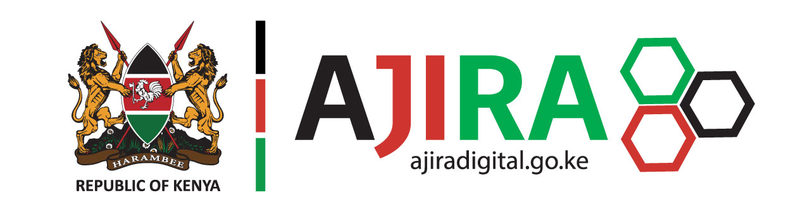
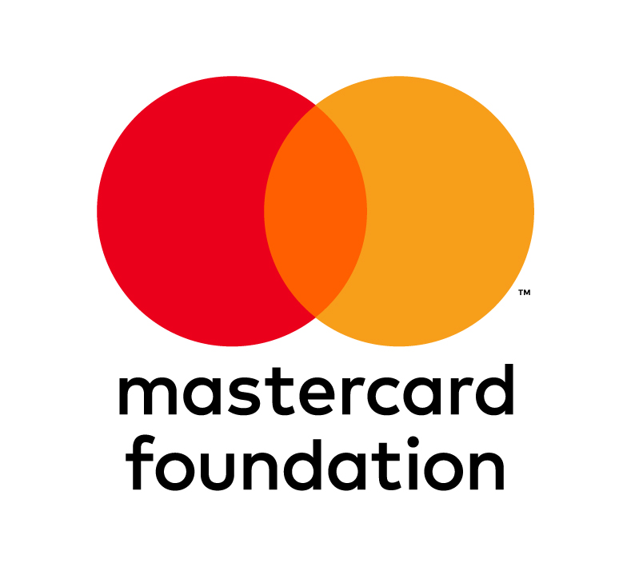
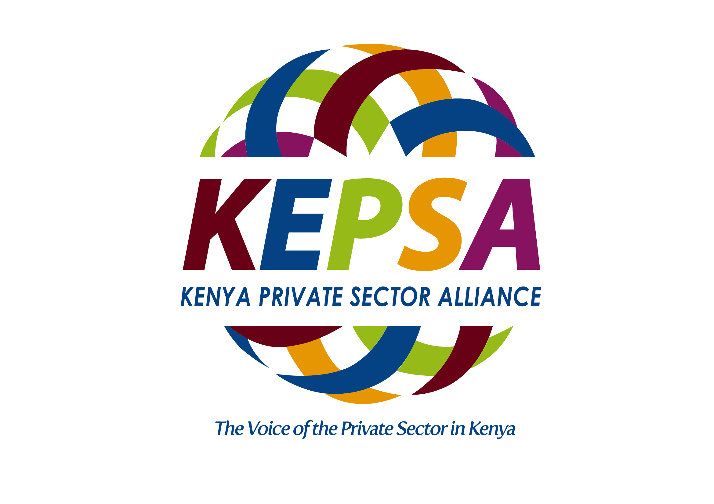
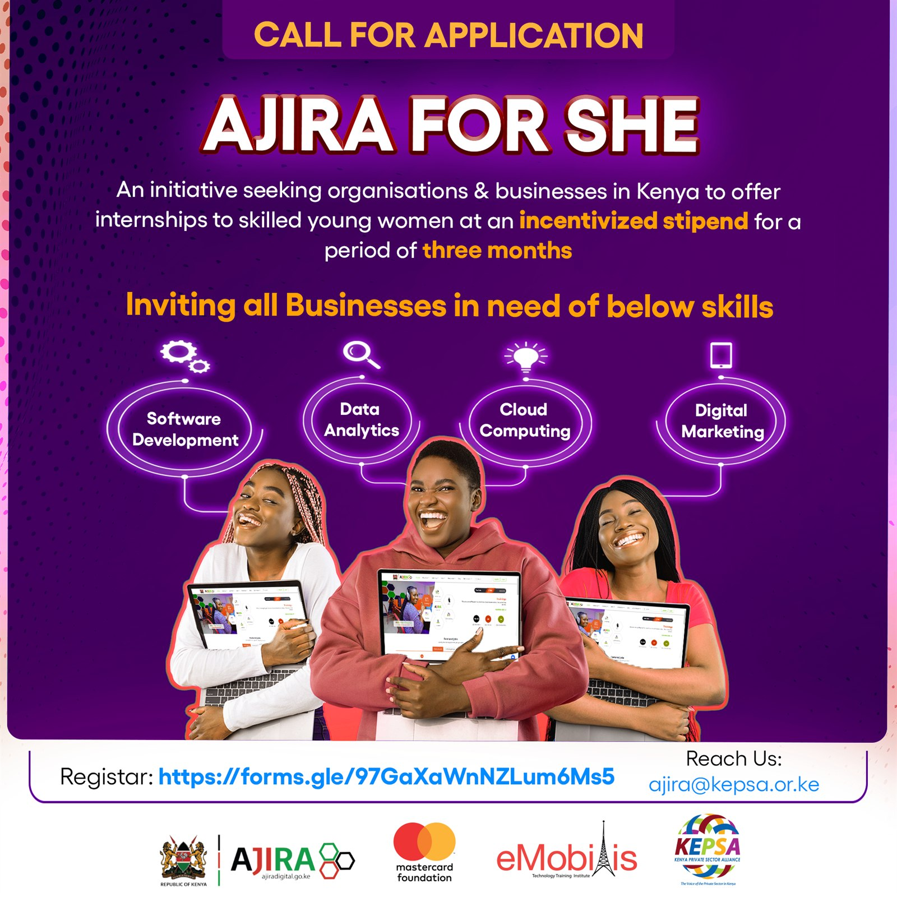
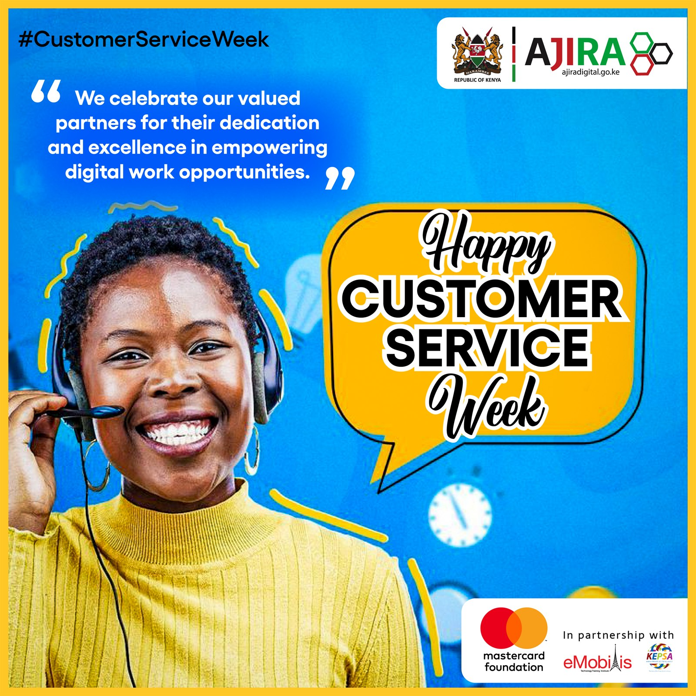

Impact stories
Documentary storytelling from the digital-work programme.

A national digital-work programme, made clearer through audience-led campaign strategy, social creative and documentary storytelling.
Digital work can be difficult to picture and access. Ajira needed clear, credible communication that could explain opportunities to different audiences and connect a nationwide programme to people in every county.
I shaped a flexible campaign system across social-first graphics, audience-specific posters, outdoor and event materials, and documentary films—turning programme services into direct messages while keeping a consistent national identity.
Client / Partners
Government of Kenya, Mastercard Foundation, KEPSA
My Role
Creative Communications Lead
Programme scale · 2025 report
613,976
registered portal users
400K+
trained in digital skills
500K+
linked to digital work
291,083
training certificates
Programme-wide figures reported for 2022–2025; not attributed to communications alone.
Partner Ecosystem


Film & social video
A focused selection of documentary and campaign films. Choose a thumbnail to play each film here; players load only when selected.
Documentary storytelling from the digital-work programme.
A campaign spotlighting women’s participation in digital work.
Campaign film connecting digital opportunity with broader audiences.
Short-form creative introducing audiences to remote work.
Selected campaign work
Social-first creative translating digital-work opportunities into clear, audience-specific messages. Select a visual to open it full size.

Ajira for She
Women’s access to digital work
Digital services
Making online talent easier to find
Boda boda outreach
Audience-specific opportunity messaging

Customer Service Week
A social-first partner campaign
Published work
Selected broadcast and social coverage. Open a link to view the original post.